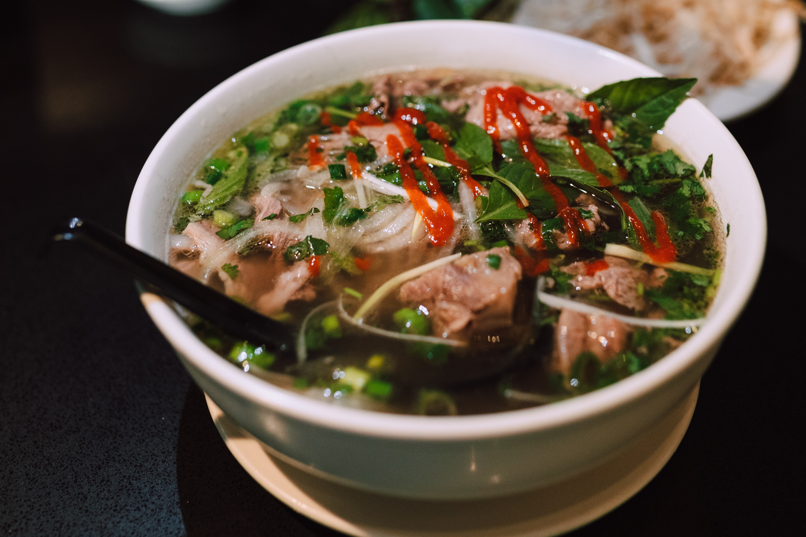

Back
Chicken Phở

Chicken phở is pretty healthy if you use minimally processed ingredients, lots of
healthy aromatics, spices, herbs, and veggies. You can make it even healthier
by choosing leaner meats and avoiding processed dipping sauces, too
For this one we have bean sprouts, Thai basil, ngo gai,
lemon, and fresh chiles. Some say that a clear broth is an important quality
in phở, however, my mom says it does not necessarily matter. Flavor is what
matters. To me, a slightly cloudy broth with killer taste beats a clear,
improperly made soup anyday. Clarity is a nice bonus, but not crucial.
What is important is the aromatics and spices that you add to your broth to
create that hallmark phở taste. Roasting the ginger and onion intensifies the
flavor through the maillard reaction. Star anise pod is the main seasoning
that makes phở stand out from other soups, and immediately recognizable as
phở which is true of beef phở too.
Ingredients
- 2 medium white or yellow onions roasted
- 20 g fresh ginger roasted
- 2 tbsp coriander seeds
- 1 cinnamon stick approximately 2 inches
- 2 star anise pods
- 1 whole chicken cut in half
- 16 c water
- 2½ tbsp salt
- 2 tbsp sugar
- 2 tsp MSG or 2 tbsp vegetarian seasoning optional
- 16 oz (1 pack) dried phở noodles small noodle thickness
- bean sprouts I prefer blanched
- Thai basil
- lemon sliced into wedges
- ngo gai (culantro) optional
- sliced jalapenos optional
- hoisin sauce
- sriracha
Steps
-
Add the aromatics, spices, and all soup ingredients into
a large stock pot and bring to a boil on high heat. Once
it hits a boil, lower the heat to maintain a low boil and
cook the chicken for 25-40 minutes until the chicken is
cooked all the way through. You can use a thermometer to
make sure the internal temperature reads 165°F (or the
juices run clear when you cut into the deepest part of
the chicken).
-
Remove the chicken once done and rinse under cold water
for one minute to cool. This will prevent the chicken
from getting dark. Once the chicken has cooled, shred
the meat into bite-sized pieces.
-
Cook the rice noodles according to package instructions
only just before you are ready to serve it. Cooking the
noodles usually take about 5 minutes after boiling the
water.
-
To assemble, start with portioning the noodles into a
bowl, and then add the soup, shredded chicken, and
toppings on top. The proportions of this entire
recipe is purely a personalized one. Try to keep the
soup to noodle, meat, and toppings ratio 2 to 1. You
gotta love that soup.
Credit to Charles Phan
who made this recipe.